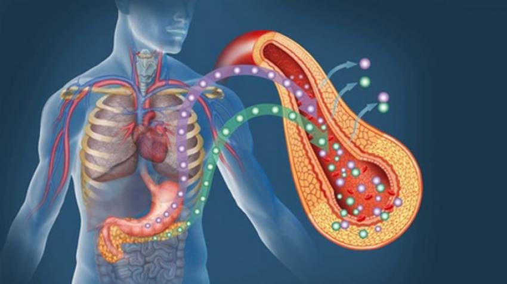

El trasplante de páncreas ofrece beneficios significativos, como un mejor control de la glucemia, reducción de la necesidad de insulina exógena y mejora de la calidad de vida al disminuir las complicaciones diabéticas. Para mejorar esta técnica, se están investigando propuestas como el desarrollo de órganos bioartificiales o la ingeniería de tejidos para producir páncreas sintéticos o cultivados en laboratorio. Además, se buscan estrategias para reducir la dependencia de la inmunosupresión, mediante terapias que eviten el rechazo del órgano trasplantado. Estas mejoras podrían aumentar la disponibilidad de páncreas para trasplantes y mejorar los resultados a largo plazo para los receptores. |
 |